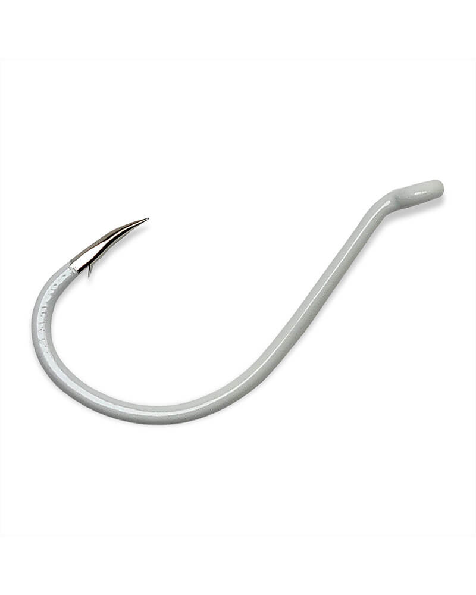

가끔 아주 웃기는 일이 벌어진다
흰바늘, 빨간바늘. 아무것도 감지 않은 이 민바늘에 송어가 곧잘 반응한다.
아예 여러 색의 민바늘만 쓰는 사람도 있다. 옆에서 샘이 나도록 걷어 올리길래 다가가 물어보면, 흰바늘을 쓴다고 한다.

흰색 UV 코팅을 입힌 옥토퍼스 훅. 위로 꺾인 아이에 짧고 둥근 벤드. 감은 것은 아무것도 없다.
↗ Gamakatsu 제품 페이지 · 이미지 출처나도 써 본 적이 있다. 솜씨가 없던 시절에는 그저 송어를 낚고 싶다는 생각 하나로 흰바늘을 던졌었다. 잠깐 사이에 대여섯 수를 끌어올리기도 했고, 이것저것 해 보다 도저히 반응이 없을 때 슬쩍 꺼내 보기도 했다.
요즘은 거의 쓰지 않는다. 솜씨가 늘었고, 민바늘이 아니어도 송어 얼굴을 보는 데 지장이 없으니... 아주 가끔 수심층 반응을 보려고 사용할 뿐이다. 딱 반응을 확인하는 용도로만.
그래도 질문은 남는다. 송어는 왜 이런 바늘에 반응하는가. 그리고 명색이 플라이낚시인인 내가 이것을 어디까지 허용할 수 있는가.
민바늘은 '아무것도 아닌 것'이 아니다
내 결론부터 적는다. 색을 입힌 민바늘은 가장 극단적으로 단순화된 Chironomid 패턴이다. 송어는 빈 바늘을 무는 것이 아니라, 자기가 늘 먹던 것과 닮은 무언가를 무는 것이다. 이유는 네 가지로 본다.
정지수 송어의 주식은 깔따구(Chironomid) 유충과 번데기다. 가늘고 살짝 휜 몸통에 다리도 꼬리도 없다. 빨간 바늘은 블러드웜으로, 흰 바늘은 창백한 유충이나 탈피 직전의 번데기로 읽힐 수 있다.
녹갈색으로 흐린 물에서는 흰색이 가장 멀리서 눈에 띈다. 정교함은 그다음 문제다. 발견되지 않는 플라이는 평가받을 기회조차 없다.
무게도 저항도 거의 없다. 비드헤드와 마라부를 하루 종일 본 학습된 송어에게는, 부자연스러운 구석이 없다는 점이 오히려 먹힌다.
펠릿으로 자란 송어는 작고 떠 있는 것을 입으로 확인하는 습성이 있다. 민바늘에는 거부감을 줄 만한 요소가 없다.
새로운 이야기도 아니다. 영국의 올리버 카이트는 Sawyer의 Pheasant Tail Nymph에서 깃털마저 덜어내고, 바늘에 가는 구리선만 감아 작은 흉부를 만든 님프를 썼다. 재주를 보여 주려는 것이 아니라 그의 주력 채비였고, 1967년 한 해 조과의 절반 가까이를 이 바늘로 올렸다고 전해진다.
그가 남긴 말이 induced take, 움직임으로 입질을 끌어낸다는 개념이다. 드레싱보다 수심과 움직임이 먼저라는 뜻이다.
흰바늘이 유난히 잘 먹히는 날은,
무엇을 묶었는가보다 어디에 어떻게 넣었는가가 답인 날이다.
이것을 플라이낚시라고 할 수 있는가
기준을 어디에 두느냐에 따라 답이 갈린다.
플라이라인의 무게로 던지고, 라인으로 입질을 읽는다. 낚시의 방법은 온전히 플라이낚시다.
타잉한 것이 없다. 감은 것도, 고른 재료도 없으니 '플라이'라고 부르기 어렵다. 그래도 플라이라고 한다면 털쪼가리정도는 붙어 있어야 하지 않을까?
다만 그 경계는 생각보다 흐리다. 빨간 실을 몇 바퀴 감고 바니시를 바른 버저는 누구나 인정하는 플라이다. 그런데 공장에서 빨갛게 코팅해 나온 바늘과 물속에서는 사실상 같은 물건이다. 실 몇 바퀴가 플라이와 민바늘을 가르는 셈이다.
그래서 나는 이렇게 정리한다. 플라이낚시의 방법으로 하는, 플라이 없는 낚시. 반칙은 아니다. 하지만 플라이낚시의 재미 절반, 곧 내가 읽고 고르고 만든 것으로 속였다는 그 부분이 빠져 있다. 솜씨가 늘면서 손이 가지 않게 된 까닭도 거기에 있을 것이다.
답안지가 아니라 측정 도구로
내가 허용하는 선은 지금 쓰는 방식 그대로다. 수심층 반응을 확인하는 용도. 흰바늘에 입질이 온다는 것은 조과가 아니라 정보다.
- Depth
- 지금 이 수심에서
- Profile
- 가늘고 밝은 것을
- Speed
- 천천히 떨어질 때
이 세 가지를 읽었으면 흰바늘의 일은 끝난 것이다. 그다음은 흰색이나 펄 계열의 슬림한 버저로 옮겨, 같은 수심에 같은 속도로 넣는다. 그렇게 낚은 송어는 내가 읽어서 낚은 송어다.
옆에서 흰바늘로 걷어 올리는 사람을 볼 때도 마찬가지다. 샘낼 일이 아니다. 저 수심, 저 속도구나. 그렇게 읽으면 된다.
흰바늘은 질문이고,
답은 내가 감은 플라이로 한다.
- Kite의 Bare Hook Nymph · Southern Wisconsin TU — Fountains of Youth
- Bare hook nymph의 계보 · CzechNymph.com — When Less Becomes More
- '왜 무는가'의 네 가지는 현장 경험에 기댄 가설이며, 검증된 결론이 아니다.